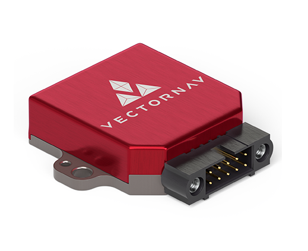

My Professional Projects
During my engineering internships, I've had the opportunity to work on these projects.
IMU Data Logger

MATLAB Signal Processing and Generation Apps
 While working at Jenkins Engineering Defence Systems, I developed a Signal Analyser MATLAB GUI app to analyse radio signals. Capabilities of this app included lowpass, highpass, and bandpass filtering, and many visualisation options including the demodulated signal, the frequency spectrum, and the spectrogram.
While working at Jenkins Engineering Defence Systems, I developed a Signal Analyser MATLAB GUI app to analyse radio signals. Capabilities of this app included lowpass, highpass, and bandpass filtering, and many visualisation options including the demodulated signal, the frequency spectrum, and the spectrogram.
I also created a Signal Generator MATLAB GUI app, which was capable of generating many different types of signal to transmit via a software defined radio. Through developing this app I learned the mathematics behind different signal modulation schemes, including frequency modulation, phase shift keying, and quadrature amplitude modulation.
Get in touch
To contact me, please email me at luke.b.eyles@gmail.com, or connect with me on LinkedIn at linkedin.com/in/luke-eyles.